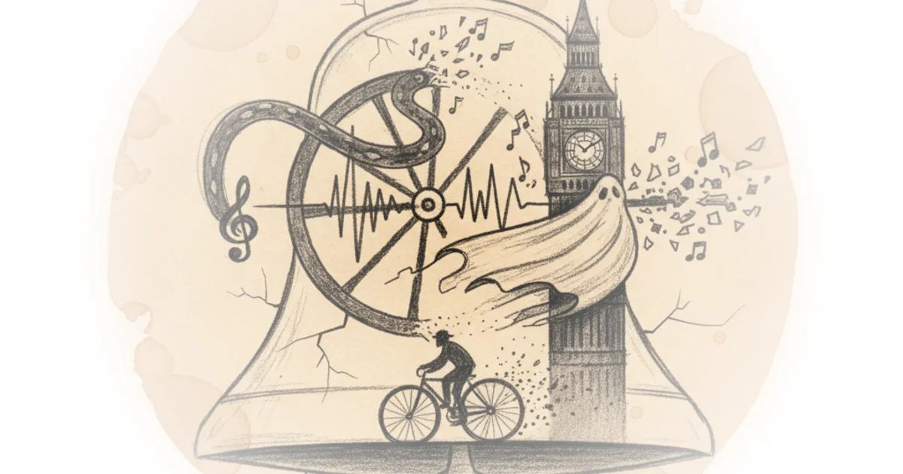
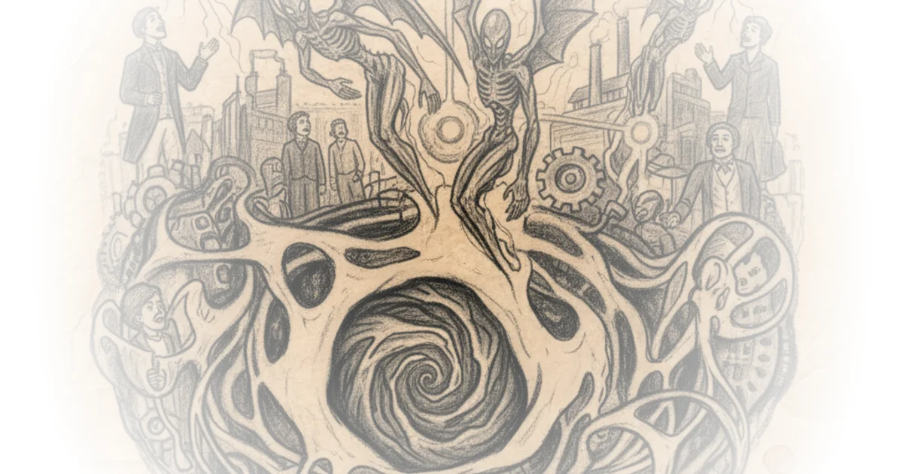
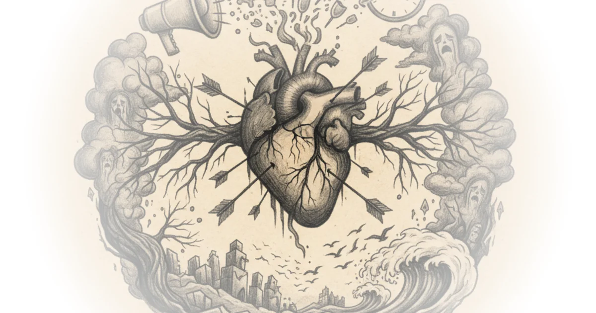
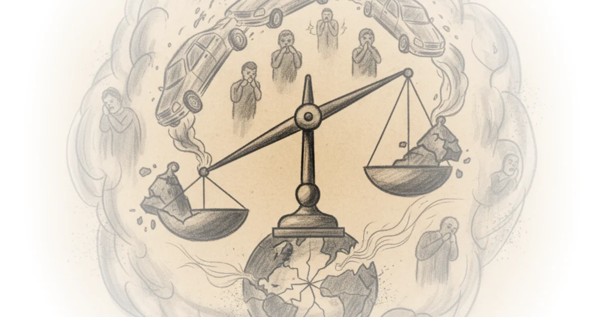

Paramount has a secret plan to buy hollywood before the cops arrive Matt Stoller · ·Feb 18, 2026 · 10 min read · Culture
Pulling threads, making clay Jeannine Ouellette · Writing in the Dark ·Feb 18, 2026 · 12 min read · Culture
Every metro system should be this beautiful Jason Slaughter · Not Just Bikes ·Feb 18, 2026 · 20 min read · Culture
The rise, fall, and (slight) rise of dvds: A statistical analysis Daniel Parris · ·Feb 18, 2026 · 10 min read · Culture
Record low crime rates are real, not just reporting bias or improved medical care Scott Alexander · Astral Codex Ten ·Feb 18, 2026 · 11 min read · Culture
Love after life: Nobel-winning physicist richard feynman's extraordinary letter to his… Maria Popova · The Marginalian ·Feb 18, 2026 · 14 min read · Culture
The end of the noisy London pedicab Michael Macleod · London Centric ·Feb 18, 2026 · 12 min read · Culture 
Still soft with sleep (a novel based on a true story) - prologue PILCROW · ·Feb 17, 2026 · 17 min read · Culture
Underground aliens and the future of humanity in 1871 Anna McCullough · ·Feb 17, 2026 · 13 min read · Culture 
No, that's not what "the research" says about exam schools Freddie deBoer · ·Feb 17, 2026 · 13 min read · Culture
What we’re getting wrong about the tumbler ridge shootings The Walrus · ·Feb 17, 2026 · 13 min read · Culture 
The live music event that changed my life Ted Gioia · The Honest Broker ·Feb 16, 2026 · 12 min read · Culture
Thoughts on elite versus populist libertarianism Richard Hanania · ·Feb 16, 2026 · 12 min read · Culture
Kafka's approach to creative block and the four psychological hindrances that keep the gifted… Maria Popova · The Marginalian ·Feb 15, 2026 · 15 min read · Culture
Pricks, devils, and phlegm. John aubrey and the fertile facts of english biography Henry Oliver · ·Feb 14, 2026 · 21 min read · Culture
Making sense of the EPA endangerment finding rule Roger Pielke Jr. · The Honest Broker ·Feb 14, 2026 · 13 min read · Culture 
Vice nimrod (a novel of the tower of babel) chapter 4 PILCROW · ·Feb 14, 2026 · 21 min read · Culture